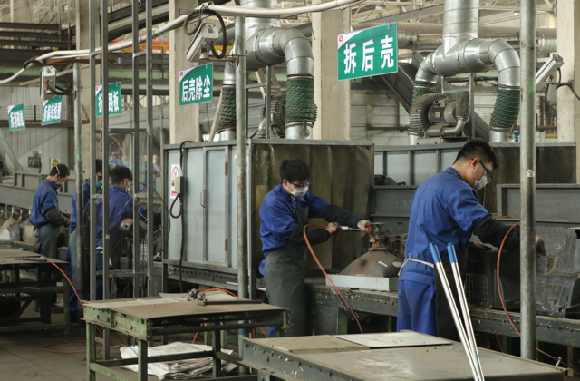
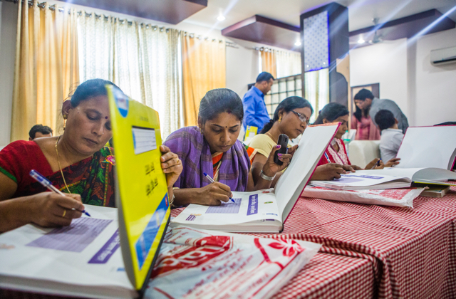
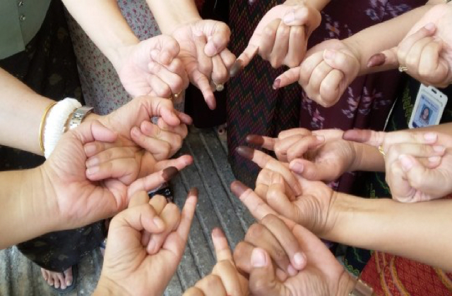
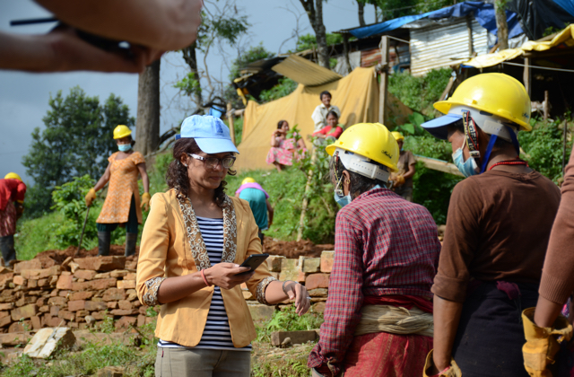

Disposing of E-waste Safely
Electronic-goods waste, or “e-waste,” is growing worldwide. For example, China produced over 3.5 million tons of e-waste in 2011. In response, UNDP worked with the internet company Baidu to develop a mobile app called “Baidu Recycle,” which connects users to legally certified e-waste disposal companies in China. The app is now available in more than 22 cities around the country, and its popularity is growing rapidly. Pictured, a participating recycling factory in Tianjin processes e-waste.
ASIA-PACIFIC
Development challenges in Asia and the Pacific are as diverse and complex as the region itself. It has some of the biggest and most dynamic economies and some of the smallest island countries; some of its countries have very young populations, such as Afghanistan and Pakistan, while other countries’ populations are aging rapidly, such as Japan and the Republic of Korea.
It is the most disaster-prone region in the world, with small island developing states in the Pacific bearing the brunt of climate change. Meanwhile, concerns about environmental degradation are increasingly relevant for some of the fastest-growing economies in the region.
The region has made the fastest human development progress in the past quarter-century, but it is also home to more than half the world’s poor.
Closing this gap is within reach, however, in part because of favourable demographics. With 68 percent of the population of working age, there is a window of opportunity to increase productivity, invest in growth and save for the future between now and 2050, when the number of people retiring will overtake the number of people entering the labour market.
To respond to these challenges, UNDP concentrates its efforts on designing innovative and efficient solutions that promote inclusive growth, effective governance, smart cities, and decent jobs—contributing to sustainable and resilient development.
UNDP helps partners design and implement large-scale development initiatives that deliver lasting social, economic, and environmental improvements in countries across the region.
UNDP’s support to governments, civil society, the private sector, and communities is at every level: legislative and regulatory advice that transforms governance systems; capacity building and trainings that build nations; and employment schemes that bring jobs to the most vulnerable groups.
For every project, UNDP provides partners with a team of experts who link local challenges to national, regional, and global knowledge and resources. With a presence in 36 countries and decades of experience in the region, UNDP has become a trusted partner helping countries to reach the Sustainable Development Goals.

COUNTRY SNAPSHOTS

China
UNDP
 Fiji
UNDP
Fiji
UNDP
Removing Debris, Restoring Daily Life
Residents of Koro Island, Fiji, receive training on debris removal in the wake of Tropical Cyclone Winston, part of a cash-for-work initiative jointly implemented by UNDP and the Ministry of Youth and Sport. The initiative helped provide urgently needed income and restore daily life after what authorities called the strongest such storm on record to hit the Southern Hemisphere.

India
UNDP
Immunizing All Children
Sixty-five percent of children in India are fully immunized, and the country aims to immunize 27 million more children each year. This enormous effort depends on ensuring a consistent supply of vaccines, stored at recommended temperatures, right from the manufacturer down to the mother and child. In partnership with GAVI, the Vaccine Alliance, UNDP is helping the Government of India reach its goal through an innovative electronic Vaccine Intelligence Network (eVIN) that digitizes entire vaccine stocks and tracks their movement.

Myanmar
UNDP
Ensuring Fair Elections
In the first general election in 25 years, voters in Myanmar dipped their fingers in indelible ink, thus allowing authorities to prevent them from voting a second time. Many people shared photos of their “inky pinky” on social media, a show of pride at participating in the historic election on November 8, 2015. UNDP provided support in preventing electoral fraud at 45,000 polling stations around the country.

NEPAL
UNDP
Innovating Emergency Response through Mobile Technology
The 7.8-magnitude earthquake that struck Nepal in April 2015 was the worst such disaster to hit the country in more than 80 years and left more than 8,000 people dead and about 600,000 structures damaged, affecting as many as eight million people. As part of its larger response to the earthquake, UNDP partnered with Microsoft to develop and roll out a mobile app for engineers to use in UNDP’s work in managing debris and providing emergency employment. The app helped teams mobilized by UNDP take precise coordinates of damaged buildings, identify property owners, secure their signed authorization for demolition, and calculate the volume of debris. That information became the basis for a demolition plan.